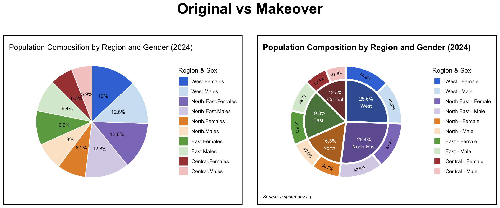

# A tibble: 6 × 8
Planning_Area Subzone Age Sex Population Time Age_numeric Region
<chr> <chr> <fct> <chr> <dbl> <dbl> <dbl> <chr>
1 Ang Mo Kio Ang Mo Kio Town… 0 Males 10 2024 0 North…
2 Ang Mo Kio Ang Mo Kio Town… 0 Fema… 10 2024 0 North…
3 Ang Mo Kio Ang Mo Kio Town… 1 Males 10 2024 1 North…
4 Ang Mo Kio Ang Mo Kio Town… 1 Fema… 10 2024 1 North…
5 Ang Mo Kio Ang Mo Kio Town… 2 Males 10 2024 2 North…
6 Ang Mo Kio Ang Mo Kio Town… 2 Fema… 10 2024 2 North…Take-home Exercise 1 Part 2
1 Introduction, Package and Data Load, Data Preparation
I will be reviewing this pie chart from LIAW YING TING CELIN
First we load all the necessary packages and data preparation that she has done.
pacman::p_load(tidyverse, ggrepel,
ggthemes, hrbrthemes,
patchwork, dplyr)
resident_data <- read_csv("data/respopagesex2024.csv")
resident_data_clean <- resident_data %>%
rename(
Planning_Area = PA,
Subzone = SZ,
Population = Pop
) %>%
# Convert Age to "90+" if it's "90_and_Over"
mutate(
Age = ifelse(Age == "90_and_Over", "90", Age),
Population = as.numeric(Population),
Age = factor(Age, levels = as.character(0:90)),
Age_numeric = as.numeric(as.character(Age))
)
# 1. Step 1
region_map <- list(
North = c(
"Central Water Catchment", "Lim Chu Kang", "Mandai",
"Sembawang", "Simpang", "Sungei Kadut", "Woodlands", "Yishun"
),
`North-East` = c(
"Ang Mo Kio", "Hougang", "Punggol", "Sengkang",
"Serangoon", "Seletar"
),
East = c(
"Bedok", "Changi", "Changi Bay",
"Pasir Ris", "Paya Lebar", "Tampines"
),
West = c(
"Boon Lay", "Bukit Batok", "Bukit Panjang", "Choa Chu Kang",
"Clementi", "Jurong East", "Jurong West", "Pioneer",
"Tengah", "Tuas", "Western Water Catchment"
),
Central = c(
"Bishan", "Bukit Merah", "Bukit Timah", "Central Area",
"Downtown Core", "Marina East", "Marina South", "Museum",
"Newton", "Novena", "Orchard", "Outram", "River Valley",
"Rochor", "Singapore River", "Straits View", "Tanglin"
)
)
# Step 2
resident_regioned <- resident_data_clean %>%
mutate(
Region = case_when(
Planning_Area %in% region_map$North ~ "North",
Planning_Area %in% region_map$`North-East` ~ "North-East",
Planning_Area %in% region_map$East ~ "East",
Planning_Area %in% region_map$West ~ "West",
Planning_Area %in% region_map$Central ~ "Central",
TRUE ~ NA_character_
)
) %>%
filter(!is.na(Region))
head(resident_regioned)2 Original Visualisation: Pie Chart By Regions
# Summarise population by Region and Sex
pie_all_regions <- resident_regioned %>%
group_by(Region, Sex) %>%
summarise(Population = sum(Population), .groups = "drop")
# Define the correct stacking order for pie slices
ordered_levels <- c(
"Central.Males", "Central.Females",
"East.Males", "East.Females",
"North.Males", "North.Females",
"North-East.Males", "North-East.Females",
"West.Males", "West.Females"
)
# Prepare the data
pie_all_regions <- pie_all_regions %>%
mutate(
RegionSex = factor(paste(Region, Sex, sep = "."), levels = ordered_levels),
label = paste0(round(Population / sum(Population) * 100, 1), "%")
)
# Plot: simple, clean pie with percentages inside
ggplot(pie_all_regions, aes(x = "", y = Population, fill = RegionSex)) +
geom_col(width = 1, color = "white") +
geom_text(
aes(label = label),
position = position_stack(vjust = 0.5),
size = 3,
color = "black"
) +
coord_polar(theta = "y") +
theme_void(base_size = 11) +
labs(
title = "Population Composition by Region and Gender (2024)",
fill = "Region & Sex"
) +
scale_fill_manual(
values = c(
"Central.Males" = "#f4cccc",
"Central.Females" = "#a94442",
"East.Males" = "#d9ead3",
"East.Females" = "#6aa84f",
"North.Males" = "#fce5cd",
"North.Females" = "#e69138",
"North-East.Males" = "#d9d2e9",
"North-East.Females"= "#8e7cc3",
"West.Males" = "#cfe2f3",
"West.Females" = "#3c78d8"
),
breaks = rev(ordered_levels)
)3 Learning from the Original Visualisation
We learned from Lesson 2 about The Four Quadrant of Data Visualization and the consideration between Clarity or Aesthetics.
Using The Four Quadrants, we evaluate three good design principles and three areas for further improvements.
Using the principals, we can classify this in the: Quadrant IV – Confusing yet Beautiful
3.1 Three good design principles Why is it “beautiful”?
- Color coding is visually appealing.
- Legend is complete and match the segment. It’s also located where it’s easy to find.
- Clean and clear font choice with percentage labels are neatly placed inside the slices.
3.2 Three areas for further improvement Why is it “confusing”?
There’s no clear visual grouping of the same region. For example, “Central.Males” and “Central.Females” are separated visually, making it hard to compare within regions.
- It also blends region and gender into a single variable without grouping, which prevents high-level insights (e.g., total by gender or region).
Pie Chart might not be ideal for this kind of “demographic” data with so many regions.
- If you still want to stick with a pie chart, you can create a sunburst plot to show the grouping. In this case, we can show the splits between Males and Females for each region. Which is what I will implement in the makeover version.
Though the legend is complete, it’s not very clear and aesthethic with the
.in the naming.
4 Makeover version
Next we prepare the makeover version of the data visualisation with the learning above.
Note
Although from the learning above we note that Pie Chart might not be ideal for this kind of “demographic” data with so many regions, the task is to improve and not change the entire idea completely but to improve on it as mentioned in class in session 3.
I will be implementing changes directly using the original code and mark the lines changes with # VR CHANGE:
# Summarise population by Region and Sex
pie_all_regions <- resident_regioned %>%
group_by(Region, Sex) %>%
summarise(Population = sum(Population), .groups = "drop") %>%
mutate( # VR CHANGE: combine together from the second part
RegionSex = factor(paste(Region, Sex, sep = ".")), #, levels = ordered_levels), VR CHANGE: not needed as we will level later after combined
ring = "outer", # VR CHANGE: this "ring" column is to mark which layer
x = 2 # VR CHANGE: this x is to mark which layer and for position later
)
# Define the correct stacking order for pie slices # VR CHANGE: NOT NEEDED, use new level later after we combine
#ordered_levels <- c(
# "Central.Males", "Central.Females",
# "East.Males", "East.Females",
# "North.Males", "North.Females",
# "North-East.Males", "North-East.Females",
# "West.Males", "West.Females"
#)
# VR CHANGE: have moved up and combine together
# Prepare the data
#pie_all_regions <- pie_all_regions %>%
# mutate(
# RegionSex = factor(paste(Region, Sex, sep = "."), levels = ordered_levels),
# label = paste0(round(Population / sum(Population) * 100, 1), "%")
# )
# VR CHANGE: here we will create the "outer layer" which is the overall region
pie_inner <- resident_regioned %>%
group_by(Region) %>%
summarise(Population = sum(Population), .groups = "drop") %>%
mutate(
RegionSex = Region,
ring = "inner", # VR CHANGE: this "ring" column is to mark which layer
x = 1 # VR CHANGE: this x is to mark which layer and for position later
)
# VR CHANGE: Combine both for plotting
pie_combined <- bind_rows(pie_all_regions, pie_inner)
# VR CHANGE: after we combine, we need to define order of slices again
ordered_levels_combined <- c(
"Central", "Central.Males", "Central.Females",
"East", "East.Males", "East.Females",
"North", "North.Males", "North.Females",
"North-East", "North-East.Males", "North-East.Females",
"West", "West.Males", "West.Females"
)
# VR CHANGE: Here we will label
pie_combined <- pie_combined %>%
group_by(ring) %>%
mutate(
percent = Population / sum(Population) * 100, # this is the overall % for each region
label = paste0(round(percent, 1), "%")
) %>%
ungroup() %>%
group_by(ring, Region) %>%
mutate(
percent = Population / sum(Population) * 100,
label = case_when(
is.na(Sex) ~ paste0(label, "\n", Region), # keep original label if sex is NA
!is.na(Sex) ~ paste0(round(percent, 1), "%") # this is sex % per region otherwise show the new percentage,
),
RegionSex = case_when(
is.na(RegionSex) ~ Region, # keep original label if sex is NA
!is.na(RegionSex) ~ RegionSex
)) %>%
ungroup() %>%
mutate(RegionSex = factor(RegionSex, levels = ordered_levels_combined)) %>%
arrange(RegionSex) # make surethe order of slices are correct
# VR CHANGE: after running the first time, decided to add this so we can adjust the angle of the inner layer label automatically
pie_combined <- pie_combined %>%
group_by(ring) %>%
mutate(
midpoint = cumsum(Population) - 0.5 * Population,
total = sum(Population),
angle = 360 * midpoint / total,
adjusted_angle = case_when(
angle <= 90 ~ angle,
angle > 90 & angle < 290 ~ angle + 180,
angle >= 290 ~ angle) # flip upside-down labels
) %>%
ungroup()
# VR CHANGE: I want to make the sunburst plot look better and easier to see. Hence maybe a poker chip (thinner outer layer) would differentiate them better
pie_combined <- pie_combined %>%
mutate(
xmin = case_when(
ring == "inner" ~ 0.5, # Inner ring closer to center
ring == "outer" ~ 1.1 # Outer ring further out
),
xmax = case_when(
ring == "inner" ~ 1.1, # Inner ring thickness = 0.6
ring == "outer" ~ 1.3 # Outer ring thickness = 0.2
)
) %>%
group_by(ring) %>%
arrange(ring, desc(RegionSex)) %>%
mutate(
ymax = cumsum(Population),
ymin = ymax - Population,
x_text = ( xmax + xmin )/2
) %>%
ungroup()
# The sizing chunk end here
# VR CHANGE: use the new pie combined and add more attributes
# Plot: simple, clean pie with percentages inside
makeover_plot <- ggplot(pie_combined, aes(y = Population, xmin = xmin, xmax = xmax, ymin = ymin, ymax = ymax, fill = RegionSex)) + #VR CHANGE: use pie_combined dataset and change x = "" to x = x. Also assign to a variable name 'makeover_plot' so we can call it again later for comparison
geom_rect(color = "white", linewidth = 1.5, show.legend = TRUE) + #VR CHANGE: add linewidth so the plots are more separated and use geom_rect so we can have a nice poker chip looking
#VR CHANGE: we will have 2 geom_text, the first one is for the inner ring here
geom_text(
data = subset(pie_combined, ring == "inner"), #VR CHANGE: filter the part of the dataset to use
aes(label = label,
x = x_text + 0.1),
position = position_stack(vjust = 0.5),
size = 3,
color = "white", #change from black to white
show.legend = FALSE
) +
#VR CHANGE: inner ring label end
#VR CHANGE: this part is for outer ring
geom_text(
data = subset(pie_combined, ring == "outer"),
aes(
x = x_text,
label = label,
angle = adjusted_angle,
hjust = 0.5
),
position = position_stack(vjust = 0.5),
size = 2.5,
color = "black",
show.legend = FALSE
) +
#VR CHANGE: outer ring label end
coord_polar(theta = "y") +
theme_void(base_size = 11) +
labs(
title = "Population Composition by Region and Gender (2024)",
fill = "Region & Sex",
caption = "Source: singstat.gov.sg"
) +
scale_fill_manual(
values = c(
"Central.Males" = "#f4cccc",
"Central.Females" = "#a94442",
"East.Males" = "#d9ead3",
"East.Females" = "#6aa84f",
"North.Males" = "#fce5cd",
"North.Females" = "#e69138",
"North-East.Males" = "#d9d2e9",
"North-East.Females"= "#8e7cc3",
"West.Males" = "#cfe2f3",
"West.Females" = "#3c78d8",
"Central" = "#7D3D3C", # VR CHANGE: ADD COLOR FOR THE REGION
"East" = "#5A834A", # VR CHANGE: ADD COLOR FOR THE REGION
"North" = "#B67127", # VR CHANGE: ADD COLOR FOR THE REGION
"North-East" = "#7160A1", # VR CHANGE: ADD COLOR FOR THE REGION
"West" = "#3C5FA2" # VR CHANGE: ADD COLOR FOR THE REGION
),
breaks = unique(pie_combined$RegionSex[!is.na(pie_combined$Sex)]), #VR CHANGE: to hide the unecessary legend like the region since we label it directly in the plot
labels = c( #VR CHANGE: add this to re-label the legend
"Central.Females" = "Central - Female",
"Central.Males" = "Central - Male",
"East.Females" = "East - Female",
"East.Males" = "East - Male",
"North.Females" = "North - Female",
"North.Males" = "North - Male",
"North-East.Females" = "North East - Female",
"North-East.Males" = "North East - Male",
"West.Females" = "West - Female",
"West.Males" = "West - Male"
)
) +
theme( # VR CHANGE: add this to make the title bo,d
plot.title = element_text(face = "bold", size = 14),
plot.caption = element_text(face = "italic", size = 8, hjust = 0),
)
makeover_plot5 Comparison

6 Reference
LIAW YING TING CELIN Take-Home Exercise 1